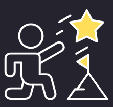

חפשו את הבעיה במקומות שלרוב אנשים לא חשבו עליה
חדשנות משמעה למצוא לארגון דרכים טובות יותר להשיג את המטרות שלהם, תלכו בדרך שעוד לא דרכו בה
חייבים לקחת סיכונים כדי להצליח. תדעו איך להתמודד איתם ואפילו לאהוב אותם
אם אתם לא לוקחים סיכונים, נאבקים במערכת ושומעים המון "לא", אז כנראה שאתם לא עושים חדשנות
הזמן הוא משאב יקר, אל תבזבזו אותו על רעיונות חלשים
כדי לא לטבוע במקום, צריך לדעת גם מתי לשחרר ולהמשיך הלאה
שינוי סביבתי מייצר הזדמנויות, זה שלא הצלחתם במקום אחד לא אומר שלא תצליחו באחר
"האשפה של אחד היא האוצר של אחר", יכול להיות שהרעיון שלכם לא רלוונטי למקום אחד אך לאחר הוא יכול לשנות את כללי המשחק. אל תוותרו על הרעיון שלכם רק אם מישהו אחד אמר לכם לא
תתחילו הכי מהר שלכם ולאט לאט תגבירו
אף פעם אל תורידו את הרגל מהגז. זה בסדר לקחת הפסקות בחיים אבל חשוב שעדיין תישארו בתוך המשחק.